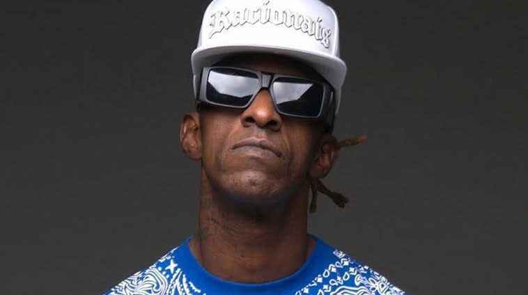

(Ice Blue)
Ice Blue, nome artístico de Paulo Eduardo Salvador (São Paulo, 16 de março de 1969), é um rapper brasileiro membro do grupo de rap Racionais MC's.
É um dos fundadores do grupo de Rap Racionais MC's junto com Mano Brown, Edi Rock e KL Jay, membros integrantes até os dias de hoje. Também apresenta o programa "Balanço Rap" na estação de rádio 105 FM junto com o companheiro de grupo KL Jay.
Seu apelido vem de "Nego Blue", música de Jorge Ben Jor. Mano Brown diz que é porque "ele andava sempre arrumadinho"